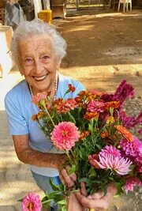

Във вторник сутринта пристигнахме в Момчиловци, в горските долини на юг. Мъглата още висеше между върховете. Последните километри извървяхме пеша, защото по-нататък няма асфалтов път. "Дядо Стоян ли търсите?" — попита възрастна жена в края на селото, с кърпа на главата. "Завийте наляво при малката каменна черквица. Къщата му е до извора. Но побързайте, защото по обяд тръгва към планината да бере билки."
Така намерихме Стоян Вълчев — 72-годишния народен лечител, прекарал целия си живот в Родопите, който днес руши едно от най-големите табута в страната: че за болките в ставите има истинско решение. Решение, което не зависи от химически хапчета, инжекции или операции. А от срещата на природата, древната мъдрост и вековната памет.
В близките места — в Момчиловци, Смолян, Чепеларе и другаде — дядо Стоян е познат почти на всяко семейство. Дъщери водят куцащите си бащи, за да ги погледне. Съпруги поръчват тубички гел за майките си в домовете за стари хора. Мъже идват след дълги работни дни, за да могат отново да ходят. Лекар от общинската здравна служба признава: "Не мога да обясня какво става с този човек. Но пациентите ми наистина се възстановяват."

"Тялото знае всичко. Трябва само да утихне шумът, за да чуеш какво шепне." Разговор с дядо Стоян в сърцето на Родопите — в неговата къща, където от стените висят снопи изсушени билки, а по рафтовете почиват вековни книги
Дядо Стоян Вълчев: "Помня всичко, сякаш беше вчера. Рано призори, мъглата още висеше между върховете. Седях пред колибата си до огъня и приготвях извлек от иглолистни дървета — тогава още за собствените си болки. Изведнъж чух тихи стъпки. Появи се жена в тъмна рокля до петите, някъде на шейсет години. Очите ѝ бяха като застояла вода — пълни със страх. Седна до мен на поваления дънер и каза:
"Дядо Стояне, моля те, спаси мъжа ми. Мъжът ми умира. Ставите му се схващат все повече, коленете са унищожени. Лекарите не могат да направят нищо повече. Не може да ходи, не може да става, не може дори да седи. Само лежи и плаче."
В ТОЗИ МИГ РАЗБРАХ: МЪДРОСТТА ЗА БИЛКИТЕ, КОЯТО НАСЛЕДИХ ОТ УЧИТЕЛЯ СИ, НЕ Е ДАДЕНА САМО НА МЕН — А И НА ТАЗИ ЖЕНА, И НА НЕЙНИЯ МЪЖ. ТОГАВА РЕШИХ ДА Я ПОНЕСА НАТАТЪК."

Дядо Стоян говори бавно, понякога с дълги паузи — сякаш претегля всяка дума поотделно. Големите му костеливи ръце почиват на коленете. Пръстите му са изцапани от смоли и корени, с които работи вече шейсет и пет години. Зад него, на стената, висят изсушени снопи салвия и кимион. По рафтовете стоят буркани, малки тъмни съдчета и тежка, подвързана в кожа книга — италиански превод на "De Materia Medica" от шестнайсети век, наследен от неговия учител.
"Хората мислят, че болките в ставите са естествена част от старостта. Това е лъжа. Колене, гръб, тазобедрени стави — това е като гора. Ако я пазиш добре, живее векове. Ако я изтощаваш и тровиш, за шест или осем години се разпада. Съвременната медицина не пази ставите. Само приспива болката. И всяка година изписва повече хапчета. Докато човекът не падне и не си счупи кост."
"Аптеките не казват истината — защото ако я кажеха, ще фалират" Дядо Стоян Вълчев обяснява защо традиционните лекарства за стави нанасят повече вреда, отколкото полза
Дядо Стоян Вълчев:
— Нека ви разкажа какво виждам месец след месец при тези, които идват при мен. Жена, шейсет и пет години. Вече десет години взима противовъзпалителни лекарства. Болката в коляното се влошава всяка година. Сега я боли и стомахът от толкова хапчета. Изследванията на бъбреците са лоши. Лекарят изписва още едно хапче — сега за стомаха. После за бъбреците. А коляното през това време се разпада. Хрущялът никой не го възстановява. Само болката се приспива — докато хрущялът не се изтърка докрай.
Това е омагьосан кръг: болка → хапче → болката се връща по-силна → по-силно хапче → стомахът страда → още едно хапче за стомаха → бъбрекът отказва → а ставата през това време се разпада. Никой не казва истината: има друг път — да се даде на хрущяла това, от което се нуждае, и да се остави сам да се възстанови.

Болка в коляното, гърба или тазобедрената става след четирийсет и пет години не е "нормална за възрастта" — това е знак, че ставният хрущял се изтрива и че изчезва синовиалната течност. Който заглуши този знак с хапчета, бавно и тихо унищожава собствените си стави.

Противовъзпалителните лекарства само блокират сигнала за болка, докато разрушаването тихо напредва. Без истинска регенерация на хрущяла ставата накрая се разпада напълно — и тогава остават само две възможности: инвалидна количка или операция с поставяне на ендопротеза, която струва хиляди евро. Нито една не връща истинския живот.
Дядо Стоян Вълчев:
— Осъзнайте сериозността на това. При мнозина, които идват при мен, хрущялът в коляното, в гръбнака или в тазобедрената става е унищожен между 70 и 90 процента. Ходят кост в кост — ако изобщо още могат да ходят. Всяка стъпка е мъчение. ТРАДИЦИОННИТЕ ХАПЧЕТА НЕ МОГАТ ДА ВЪЗСТАНОВЯТ ХРУЩЯЛА — САМО ПРИКРИВАТ БОЛКАТА, ДОКАТО ВСИЧКО СЕ РАЗПАДА!
И знаете ли какво най-много ме боли в гърдите? Това, че тези хора са сами. Децата заминаха за Германия, за Швейцария, за Австрия, за Англия. Аптеката им носи лекарства веднъж седмично. Лекарят ги вижда веднъж годишно. А през това време те тихо се разпадат. Гръб, колене, тазобедрени стави. След време вече се страхуват да излязат от къщи, за да не паднат. Затова правя това, което правя.
Истории, които никога няма да забравя — и истории, които ще променят това как гледате на силата на природата
Дядо Стоян Вълчев:
— Нека ви разкажа кого виждам всяка седмица. Не говоря за статистика. За хора. За хора с имена, които имат семейство, които имат свои истории. За хора, които медицината вече е отписала — а природата още не ги е отписала.


Това са симптомите, които най-често виждам — и които милиони хора не приемат сериозно, мислейки, че са "просто годините":
- Остра болка в коляното при качване или слизане по стълби — или при всяко движение;
- Сутрешна скованост — тялото е "дървено", не се раздвижва 30–60 минути след събуждане;
- Хронична болка в гърба — не могат да се наведат, не могат да станат от леглото;
- Отоци в коленете, глезените или пръстите;
- Скърцане и пукане в ставите при всяко движение;
- Болка в тазобедрената става, която се разпространява към бедрото — не могат да извървят повече от 50 метра;
- Деформирани, възлести пръсти — не могат да хванат предмети;
- Изтръпване в краката или ръцете — знак за дископатия или притиснат нерв;
- Усещане за "нож" в кръста при изправяне на гърба;
- Прегърбен гръб, изкривена стойка — напредваща кифоза;
- Нощна болка, която не дава да се спи — будят се 4–5 пъти на нощ;
Всеки от тези симптоми е аларма. И след 45-ата или 50-ата година пренебрегването им води до един-единствен край: ПЪЛНА НЕПОДВИЖНОСТ, ИНВАЛИДНА КОЛИЧКА, ПЪЛНА ЗАВИСИМОСТ ОТ ДРУГИТЕ — И В МНОГО СЛУЧАИ НАСТАНЯВАНЕ В ДОМ ЗА СТАРИ ХОРА, КЪДЕТО ДЕЦАТА ИДВАТ САМО ВЕДНЪЖ В ГОДИНАТА.
Всеки ден, прекаран с нелекувани стави, ви приближава към трайна неподвижност! Хиляди български пенсионери завършиха в домове за стари хора именно защото не приеха болката сериозно — или защото взимаха само хапчета, които не решиха проблема. Действайте веднага — заради себе си или заради най-близките си — преди да е станало късно!
"Моят учител ме научи: за всяка болка природата има отговор — ако знаеш къде да търсиш" Как дядо Стоян Вълчев намери формулата, която днес използват над 1700 души от селата около Родопите
Дядо Стоян Вълчев:
— На следващия ден отидох да видя мъжа на онази жена. Къщата беше в полумрак. Човекът изглеждаше като изсушена гъба — сух, жълтеникав. Тялото беше още топло, а погледът вече се сбогуваше със света. Седнах до него, хванах го за ръката и попитах: "Колко години живееш с тази болка, брате?" Мълчеше. Сълза се търкулна по бузата му. "Деветнайсет години," прошепна. "И никой не знае как да ми помогне. Всички само изписват лекарства."
Тогава си спомних за стар запис. Години по-рано в наследството на моя учител намерих забравена тетрадка — италиански хербарий от шестнайсети век, превод на "De Materia Medica" на великия Диоскорид. На една страница пишеше: "Вътрешният огън на тялото краде на ставите тяхната влага и гъвкавост. Само този, който познава сълзата на дървото — смолата, която пази паметта на човешката тъкан — може да върне живота на костите им."

Разбира се, това не беше научно обяснение — а мъдрост, предавана от поколение на поколение. Но тогава още не знаех, че онзи ден ще бъде началото на три години работа. Три години, в които събрах наследството на учителите си и даровете на гората в обикновени тубички гел, направени ръчно — които могат да възстановят хрущяла отвътре, без взимане на химически хапчета.
Какво съдържа гелът, който прави дядо Стоян:
- Смола от иглолистни дървета от Родопите — сълза на дървото Смола от иглолистни дървета — която моят учител наричаше "сълза на дървото". Традиционната народна медицина я използва от векове при болки в ставите. Естествено противовъзпалително средство, което спира разпадането на хрущяла и събужда регенерацията
- Глюкозамин и хондроитин — в естествена форма Тухлите на хрущяла — древен запас на природата, който клетките разпознават и използват
- Хиалуронова киселина — под формата на малки молекули Връща влагата на ставата — това, което природата е отредила на човешкото тяло и което възпалението му е отнело
- Колаген тип II и МСМ Укрепват връзките и сухожилията около ставата — естествената защитна мрежа, която с годините отслабва
- Камфор и планинска арника Незабавно облекчение на болката и отока — както казваше моят учител: "духът на дървото, който гаси огъня"
Гелът съдържа още 14 други редки растителни екстракта, които дядо Стоян и помощниците му берат по склоновете на Родопите в период от шест седмици — всяка година, само веднъж годишно, когато билките са в пълна зрялост. Съотношенията дядо Стоян е научил от своя учител и всяка стъпка върши със собствените си ръце.
Така се роди гелът Nautubone — ръчно направен, с най-добрите лечебни билки от Родопите
Дядо Стоян Вълчев:
— Не се ражда в лаборатория. Ражда се в моята работилница, тук в подножието на планината. Смолата от иглолистни дървета берем аз и помощниците ми — в старите смърчови гори, по най-високите била на Родопите, където дърветата от векове отделят своите сълзи. И другите лечебни билки берем тук, по склоновете. Брането ни отнема шест седмици, защото всяка билка трябва да се отреже в мига на своята зрялост. След това правим гела на малки партиди и го пакетираме ръчно. На ден можем да направим най-много 70 тубички гел — не повече, защото това би развалило качеството.


Основата на гела е 200-годишна формула, завещана ми от моя учител. Казано със съвременни научни думи: комбинацията от концентрирани растителни екстракти позволява активните вещества да се поемат от тялото и по кръвен път да стигнат право до ставната обвивка, където се разпада хрущялът. Ефектът е пет пъти по-силен от който и да е аптечен добавка, защото природата знае точно как да работи с човешкото тяло. А предимството на гела пред обикновените кремове и лосиони е в това, че прониква по-дълбоко — чак до ставната обвивка, а не остава само на повърхността на кожата. Нанасяте го точно там, където боли: на коляното, гърба, тазобедрената става, ръцете или врата — без хапчета, които минават през стомаха. За възрастните хора, които живеят сами, това означава лесна употреба и самостоятелност.
Nautubone не е конкуренция. Не иска да се състезава. Иска само да помогне. Всяка съставка — в точно съотношение — събужда регенерацията на хрущяла, възстановяването на синовиалната течност и успокояването на възпалението. Това е единственото средство, което действа на клетъчно ниво и същевременно достига всички засегнати места — колене, гръб, тазобедрени стави, ръце, врат — отвътре. И най-важното: действа и на 70, 80, 85 години! Първите ми пациенти бяха най-възрастните — хора, които всички вече бяха отписали.
Дядо Стоян Вълчев:
— Първата жена, на която дадох този гел, четири месеца не беше ставала от леглото. Това беше леля Минка от Момчиловци. На третия ден сама дойде в кухнята и ми свари кафе. И двамата плакахме. Тя — защото за първи път от много години не я болеше всяко движение. Аз — защото в този миг разбрах, че наследството на моя учител е живо. Че през всички тези години не съм работил напразно.
Nautubone ви помага по четири начина да си върнете радостта от ходенето — на всяка възраст
Четири основни действия на гела Nautubone:
- Премахване на болката и възпалението Още в първите 30–45 минути след нанасяне комбинацията от смола на иглолистни дървета, арника и камфор намалява болката и възпалението. Не блокира нервния сигнал (както обикновените химически хапчета) — а успокоява самия източник на възпалението, там, където проблемът започва.
- Възстановяване на хрущяла Глюкозаминът, хондроитинът и колагенът тип II стигат до ставната обвивка и събуждат клетките на хрущяла (хондроцитите), които започват да изграждат нова хрущялна тъкан. Този процес започва след 3–5 дни редовна употреба.
- Възстановяване на синовиалната течност Хиалуроновата киселина от малки молекули се поема от тялото и замества синовиалната течност — естествената "смазка" на ставата. Благодарение на това костите вече не се трият една в друга, а движението става леко и безболезнено.
- Дългосрочна защита и профилактика МСМ и минералният комплекс укрепват връзките и сухожилията около ставата и предотвратяват бъдещи увреждания. След 30–60 дни употреба ставата получава стабилна защита, която трае няколко месеца.
Истории, които дядо Стоян разказва лично — за хора, които отново ходят
Дядо Стоян Вълчев:
— Нека ви разкажа за някои от тези, които виждам всяка седмица. За хора, на които никой не даваше шанс — нито лекарите, нито семейството. За хора, които отново ходят.

Леля Минка, 82 г., Момчиловци. Четири месеца не беше ставала от леглото. На третия ден от употребата на Nautubone направи първите си стъпки сама. След 30 дни излиза на двора без помощ. "Това никой не го очакваше. Дори аз самата. Дядо Стоян идва веднъж седмично. Само ме поглежда, докосва коляното и кимва."
Резултат след 30 дни: Самостоятелно ходене, сутрешната скованост изчезна, болката падна от 9/10 на 2/10.
Дядо Ристо, 70 г., пенсиониран миньор от Мадан. Дископатия, ишиас, не можеше да стои прав повече от 5 минути. След 6 седмици — върна се в градината си, обработва две лехи на ден. "Мислех, че гърбът ми е унищожен завинаги. Бях готов да приема живота на инвалид. Сгреших. С гела на дядо Стоян се чувствам двайсет години по-млад."
Резултат след 45 дни: Острата болка в кръста изчезна, подвижността се върна, за първи път от 4 години спа дълбоко цяла нощ.Защо Nautubone не е в аптеките? И как да го получите?
Дядо Стоян Вълчев:
Честно казано, направата на Nautubone е тежък и бавен процес. Материалите са редки — смола от иглолистни дървета може да се бере само в старите смърчови гори, другите билки ръчно по склоновете на планината, а имаме само шестседмичен прозорец в годината, когато билките са напълно зрели. На ден в работилницата на дядо Стоян можем да направим най-много 70 тубички. Не можем да отговорим на всички заявки.
Ще минат още поне 2–3 години, преди Nautubone да стигне до аптеките. Дотогава се предлага на цялата територия на страната само през интернет, в програми за подкрепа, които се отварят два пъти годишно. Отстъпката може да достигне 50 % — което е особено важно за българските пенсионери от селата, които живеят с малка пенсия.
Когато в аптеките разбраха, че тези гелове наистина действат — дори при напреднала артроза и дископатия — поискаха да вземат за тях 129 EUR за тубичка. Казах им: "Не работя за пари. Моят учител ми даде безплатно всичко, което знаеше. Няма да ограбя българските пенсионери." Аптеките ме отказаха. Няколко дни по-късно започнаха да ме посещават хора от здравната инспекция. Искаха документи. Искаха да ме глобят. Но не се отказах. Тогава в живота ми се появи един младеж от София. Майка му бях излекувал три години по-рано от тежка артроза на коляното — за него и за майка му отдавна бях забравил. Сега се върна. Каза: "Дядо Стояне, ти тук в планината правиш чудеса със собствените си ръце. Но в България има хиляди хора, които страдат и които никога няма да стигнат дотук. Позволи ми да помогна." Уреди геловете, направени с моите инструменти, да се пакетират в чиста работилница в стерилни тубички, куриерска служба да ги доставя из цялата страна и малък екип да отговаря на телефоните. Аз продължавам да ги правя тук, със собствено темпо. Той се грижи само за това да стигнат до тези, които се нуждаят от тях.
Моля ви: НЕ ПРОПУСКАЙТЕ ТАЗИ ПРОГРАМА! Не само заради себе си — а и заради родителите, дядовците и бабите, близките роднини, които може би страдат в мълчание. Или заради тези, които вече са в домове за стари хора, сами, и на които никой нищо не изпраща. Бъдете този, който прави разликата.
За поръчка използвайте формуляра по-долу.
Последна възможност да получите Nautubone тази година — за себе си или за някой близък, който страда в мълчание

Дядо Стоян Вълчев:
— Запазих 20 000 тубички изключително за читателите на този портал. Всеки български гражданин над 40 години може да получи отстъпка 50 %, но програмата приключва .
Не чакайте, докато вече не можете да се качите по стълбите. Докато коленете ви окончателно не ви предадат. Докато гърбът ви не се блокира. И преди всичко — не чакайте, докато не станете "бреме" за най-близките си. Един курс събужда естествената регенерация на хрущяла — и от този миг нататък тялото работи само. Няма нужда от доживотно лечение, няма химически хапчета, няма болка, която се връща. Една стъпка, и тялото ви ще си спомни как се живее.
Впишете името и телефонния си номер. Консултант ще ви се обади, ще избере подходящата програма и ще уреди доставката за 2–3 дни с куриер право до вашия адрес в цяла България.
С любов и грижа — дядо Стоян Вълчев. Грижете се за най-близките си. Може би единственото, от което се нуждаят, е да знаят, че не са забравени.
Обновено: : Предвид изключителния интерес наличностите може да се изчерпат по-бързо от предвиденото! Днес — — е последният ден на програмата или до изчерпване на наличностите.
Внимание! Не затваряйте и не опреснявайте страницата, иначе вашата тубичка Nautubone ще бъде предложена на друг човек!
Можете да участвате в офертата — вашето място е запазено: Nº 19 974
право до посочения от вас адрес

КОМЕНТАРИ

Боряна Захариева
Преди 2 часа
Плаках, докато четях това. Мама е на 76 години, вече две години е в дом за стари хора в Смолян — точно защото коленете ѝ отказаха, а аз не можех да се грижа за нея. Това е най-голямата ми вина. Поръчах ѝ Nautubone. Надявам се да не е късно. Дай Боже да подейства.
Веселина Колева
Преди 5 часа
Миналия петък получих Nautubone. Сутрин и вечер нанасям гела. За 5 дни болката значително отслабна, мога да слизам по стълбите, без да се държа за парапета! Историята за дядо Стоян ме убеди да поръчам. Изключителен човек, наистина.
Силвия Петрова
Преди 8 часа
На 69 години съм. Четири години се мъчих с гърба — дископатия и ишиас. Не можех дори да се наведа, за да си завържа обувките. Лекарите ми изписаха противовъзпалителни, които ми съсипаха стомаха. След 3 седмици с Nautubone болката почти изчезна. Сама ходя на пазара, готвя. Върнах си живота, слава Богу.
Георги Кралев
Преди 12 часа
Работя по 10 часа на ден в офис в София. Гърбът и вратът вече не реагират. Лекарят каза: "Или сменяш работата, или операция." Избрах гела Nautubone. След 5 седмици — нито следа от болка. И огромно уважение към дядо Стоян — в свят, където всички искат пари, той ходи пеша до забравените старци в планината.
Лидия Иванова
Преди 14 часа
Честно казано, не вярвах. Толкова неща се рекламират в интернет, че загубих доверие. Прочетох този текст само защото свекърва ми не може да ходи, а аз съм отчаяна. Поръчах с мисълта "ако не подейства, губя 39 €". Минаха 3 седмици. Свекърва ми вчера сама стана от фотьойла! Моята свекърва! Която не беше ставала 8 месеца. Сега не знам какво да кажа. Пиша за тези, които се съмняват като мен.
Дамян Михайлов
Преди 16 часа
Поръчах 3 тубички — за себе си (колене), за жена ми (ръце, артрит) и за бащата на жена ми в дома за стари хора. Не можем да го посещаваме често, поне да му изпратим това, от което се нуждае. Надявам се и на него да помогне. Благодаря за тази статия.
Донка Рангелова
Преди 18 часа
Питам се дали да поръчам за баща ми. Вече 3 години е в дом за стари хора — коленете изобщо не работят. Предаде се, едва говори. Мислите ли, че Nautubone може да помогне и на 78 години?
Марияна Тодорова
Преди 17 часа
Донке, майка ми е на 82 години! Тежък артрит в двете колене, не ставаше от леглото. Вече 2 месеца използва Nautubone — сега сама излиза на двора. Не преувеличавам. И най-хубавото: когато я посетих, ме чакаше права на вратата! Заедно плакахме. Поръчай без колебание, баща ти заслужава шанс.
Здравко Севов
Преди 15 часа
Донке, поръчайте без притеснение. На 78 години съм, бях на крачка от инвалидната количка — коксартроза. Nautubone ме изправи на крака за 2 месеца. Буквално. Баща ви заслужава повече от дом за стари хора.
Елена Ангелова
Преди 20 часа
Една седмица нанасям гела на коленете и кръста. Сутрин вече не съм "дървена пръчка". Мога да се наведа, мога да стана без "ох". Поръчах и за съседката, на 73 години е и живее сама, при ходене се държи за стените.
Снежана Върбанова
Преди 1 ден
Признавам — четох тази статия с недоверие. Имам опит с продукти, които обещават всичко. Но историята за дядо Стоян ме спечели и реших да опитам, защото коленете ме мъчат вече 5 години. След един месец — мога да копая в градината! Не казвам, че е чудо. Казвам, че действа. Дайте му шанс.
Стефка Томова
Преди 1 ден
На 82 години съм. Миналата година не можех дори сама до тоалетната. Децата говореха, че ще ме дадат в дом за стари хора. Опитах Nautubone — без големи надежди. И ДЕЙСТВА!!! Ходя сама, обличам се сама, сама стигам до вратата. Децата вече не споменават дом за стари хора. Това е най-голямото ми щастие.
Борис Павлов
Преди 1 ден
Жена ми не можеше дори по стълбите да слезе. Държеше се за стената и плачеше от болка. Мислех, че я губя — не заради болестта, а заради отчаянието. Поръчах Nautubone с отстъпка. След 4 седмици вчера сама отиде на пазара и се върна с цветя. С цветя! Благодаря от сърце.
Яна Кръстева
Преди 1 ден
Поръчах четири тубички — за мама (в дома, колене), за татко (в дома, гръб) и две за себе си (ръце, артрит в пръстите, не можех да пиша). Историите от статията ме трогнаха. Нямам повече оправдания.
Славка Горанова
Преди 2 дни
Получих Nautubone — куриерът го достави за 2 дни! Гела вече предадох на мама в дома. В сърцето си имам надежда. Тази статия изпращам и на персонала — може да се обадят на дядо Стоян.
Иван Лазаров
Преди 2 дни
Търсих Nautubone по аптеките — нямат го. Казаха, че трябва да се поръча на тази страница. Надявам се още да е наличен. Дядо ми спешно се нуждае от него — на 81 години е и вече не може да ходи.
Марта Върбанова
Преди 3 дни
Въпрос към тези, които вече го използват: колко пъти на ден се нанася гелът и колко време трае един курс? В статията го прочетох набързо и не го запомних.
Андрей Петков
Преди 3 дни
Марта, по-горе в текста пише: най-краткият курс, който дядо Стоян препоръчва, е 30 дни, при по-тежки проблеми 60 или 90 дни. Гелът се нанася на болното място. Ако не сте сигурна, попитайте консултанта, когато ви се обади — на мен всичко ми обясни по телефона.
Иванка Севова
Преди 4 дни
Трябва ли да се плаща нещо предварително, когато се подаде поръчка на тази страница? Не обичам да давам данни за карта.
Бойко Ракев
Преди 4 дни
Не, на страницата не се плаща нищо предварително — във формуляра вписвате само име и телефонен номер. Плащате при получаване, на куриера. Така пише и под формуляра.
Тереза Костова
Преди 5 дни
Какво точно има вътре? Питам, защото съм чувствителна към някои растения.
Любен Христов
Преди 5 дни
Съставките са изброени по-горе в статията: смола от иглолистни дървета, глюкозамин и хондроитин, хиалуронова киселина, колаген тип II и МСМ, камфор и планинска арника. Ако сте чувствителна към нещо, кажете го на своя лекар — тук никой не може да прецени вместо него.